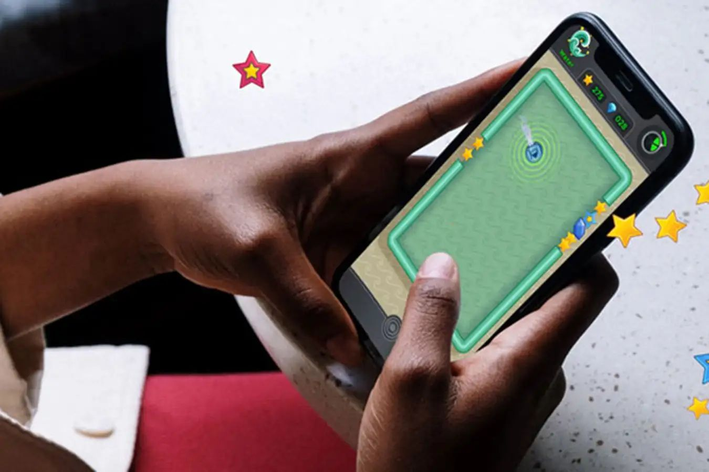

אם הייתם אומרים לי שמשחק קטן בטלפון יכול לטפל בחרדה חברתית לא הייתי מאמין.
פורסם במקור ב LinkedIn
אם הייתם אומרים לי שמשחק קטן בטלפון יכול לטפל בחרדה חברתית לא הייתי מאמין.
אבל הנה - מחקר חדש שפורסם ב-New Scientist מראה שמשחק קצר ופשוט יכול לעזור להוריד חרדה חברתית, ואפילו לשנות את הדרך שבה אנחנו מפרשים את העולם סביבנו. המשחק זמין להורדה בחינם למכשירי אנדרואיד, וכבר עוזר עם תסמיני חרדה ברחבי העולם.
איך זה עובד?
במקום להילחץ מכל מבט, תנועה או הערה, המשחק מתאמן עלינו למצוא דווקא את הרמזים החיוביים בסביבה: חיוך, מחווה נעימה, מילה טובה.
לאט לאט, כמו מין "אימון מוחי", הדפוס במוח משתנה, והתחושות העצבניות מתחלפות בפרשנות רגועה יותר.
זה עד כדי כך פשוט:
משחק קצר. כמה פעמים ביום. בלי פסיכולוגים, בלי תרופות.
פשוט להזיז בעדינות את הזרקור של תשומת הלב מהשלילי אל החיובי.
וזה גרם לי לחשוב - ומה אם גם בעבודה, בניהול צוותים, או בבניית קריירה, זה היה הסוד?
להתאמן לראות הצלחות קטנות.
לחפש הזדמנויות במקום בעיות.
לכוון את עצמנו שוב ושוב אל מה שמזין אותנו - לא מה שמרוקן.
בנתיים, אם מעניין אותם לראות ולשחק, הנה הקישור: https://lnkd.in/dZ24JjmY
